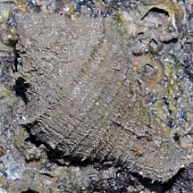
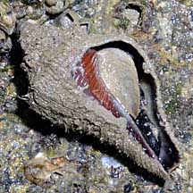
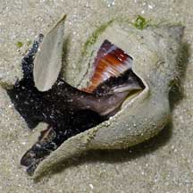
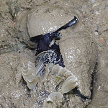
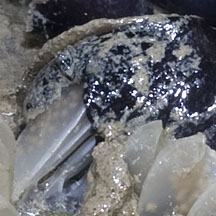
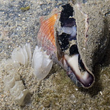
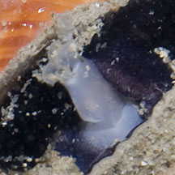
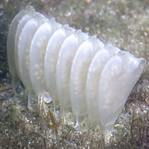
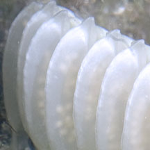

|
|
| shelled snails text index | photo index |
| Phylum Mollusca > Class Gastropoda > Family Melongenidae |
| Spiral
melongena Pugilina cochlidium Family Melongenidae updated Aug 2020
Where seen? This large snail is commonly seen on our muddy-sandy shores particularly on our Northern shores, on rocky shores and seagrass meadows and near mangroves. Features: 8-12cm. Shell large, thick with a long siphonal canal. Operculum teardrop-shaped and made out of a horn-like material. Body all black. 'Hairy' shell: The shell of a living spiral melongena is covered with a layer of fine hairs (called the periostracum). These hairs trap surrounding sediment so that the snail blends perfectly into the mud. The living snail is thus rarely spotted although relatively large and common. When the snail dies, the hairs drop off revealing a glossy, orange shell. The large empty shell is often taken over by a hermit crab. |
 Fine hairs on the shell of a living snail. Pulau Ubin, Feb 10 |
 Underside. Pulau Ubin, Feb 10 |
 The animal's body is black. |
| What does it eat? The spiral melongena
eats barnacles.
It is believed to get to the barnacle by forcing its long proboscis
between the plates that seal the barnacle's shell opening. Spiral babies: The spiral melongena is responsible for the strange yellow zipper-like egg capsules that are often encountered on rocks and other hard surfaces. The young hatch as miniature snails with a shell and a foot. |
|
 Mating and laying eggs  Changi, Aug 11 |
 Laying eggs  Tanah Merah, Sep 11 |
 Eggs in the capsule  Tanah Merah, Dec 11 |
| Human uses: It is collected as food in Indonesia, Malaysia and the Philippines, and the shells used to make lime. |
*Species are difficult to positively identify without close examination.
On this website, they are grouped by external features for convenience of display.
| Spiral melongena snails on Singapore shores |
On wildsingapore
flickr
|
| Other sightings on Singapore shores |
Links
References
|